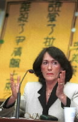

|  |
|
拉法葉艦軍售弊案關鍵人--鍾古夫人上午應新黨總統候選人李敖與新黨全委會召集人李慶華之邀來台，針對該軍售案提出現身說法。
（記者胡經周 攝影）
|
記者劉建宏 報導
新黨上午邀請揭露拉法葉艦軍售案醜聞的關鍵人物鍾古夫人出席記者會，她強調，此行主要目的是希望能夠找到跟拉法葉艦軍售案醜聞的關係證人，並且在6月時能夠回到法國作證，還她清白。她並表示，拉法葉艦總價160億法郎，回扣有30億法郎，法國外長杜馬也證實給了3億美金的回扣；另外，台灣向法國購買的幻象2000戰機，也有25億法郎的回扣。
因本案遭「滅口」的前海軍上校尹清楓的遺孀李美葵，上午也一同出席記者會。她強調，國防部對本案完全不聞不問，甚至企圖湮滅證據，只有更換新政府才能揭發真相。她也呼籲，政府應將本案關係人郭立恆交給司法機關審判，並且通緝逃亡美國的重要涉案人汪傳浦，才能查出整個案情。鍾古夫人是在前天從香港抵達高雄，並與李美葵就案情交換過意見，昨晚才從高雄飛抵台北。
鍾古夫人表示，當初法國政府並不願意出售拉法葉艦給台灣，她的職位則是億爾富公司與法國外交部之間的公關人員，但是當軍火商湯姆生公司知道她與當時的法國外長杜馬的關係之後，便邀請她對杜馬進行「特殊的遊說」，以便平撫法國政府內部反對軍售台灣的聲浪。
鍾古夫人又說，後來法國和中國之間的關係為此而出現緊繃情勢，當時擔任經濟部長的蕭萬長遂到法國施壓，並表示如果法國政府不趕緊同意軍售，台灣將轉向美國購買，法國政府便批准出售6艘拉法葉艦給台灣，結果也爆發出30億法郎的佣金回扣醜聞案。另外，台灣向法國購買的幻象2000戰機，也有25億法郎的回扣。
鍾古夫人也提到，拉法葉艦總價160億法郎，回扣有30億法郎，億爾富公司佔了1%，且允諾給她0.5%，即8千萬法郎。至於台灣方面，杜馬也證實給了3億美金的回扣。
至於為什麼會選擇在距離總統大選指剩下5天的時候才來到台灣，是否有特殊目的？鍾古夫人則表示，她純粹是想來找尋對自己有力的證據，沒有其他目的。另外，對於除了蕭萬長之外，還有誰牽涉軍售案？3億美金流到台灣的真實性又如何？杜馬夫人說，她只知道蕭萬長，其他人則不曉得。有關佣金流到台灣的真實性方面，她也只是聽說，詳情應該由台灣政府來查。
●李敖:李登輝以下相關人員
難逃干係
新黨總統候選人李敖表示，有關拉法葉的回扣案，牽涉人不會只有幾個軍官而已，蕭萬長的名字都已經出現了，他的頂頭上司因該也知道，而且在郝柏村出版的《參謀總長日記》一書，也提到他在汪傳浦的陪同下，曾到法國訪問，回來也向李登輝報告。由此可以合理的推斷，從李登輝以下的相關人員，都跟回扣案離不開關係。
新黨副總統候選人馮滬祥也呼籲3點，連蕭陣營應該將本案交代清楚；另外，當時有2筆分別是6千萬與3億的金額，曾經存入總統府辦公室主任蘇志誠的中國信託帳戶，財政部應該查清楚前的流向。最後，他又要求政府應追贈尹清楓為少將。
鍾古夫人在下午3時將前往監察院，晚上9時將上李敖主持的《挑戰李敖》，說明整個案情。(2000/03/13/勁報)